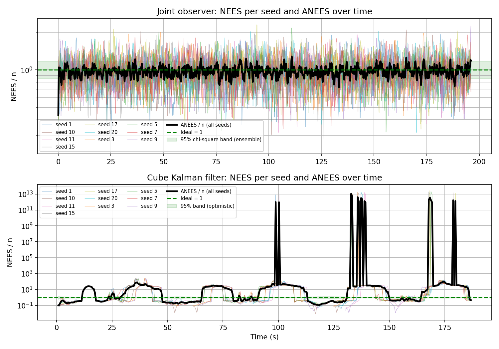
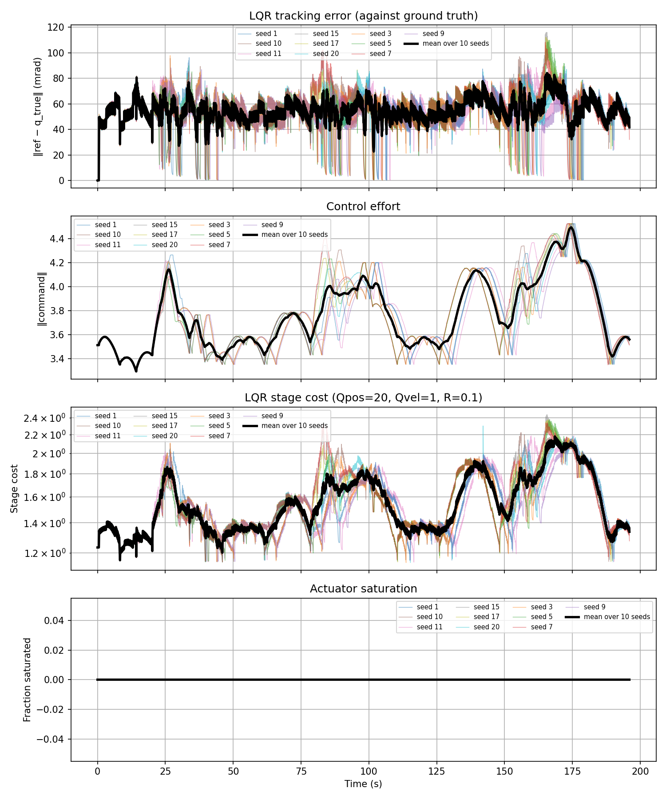
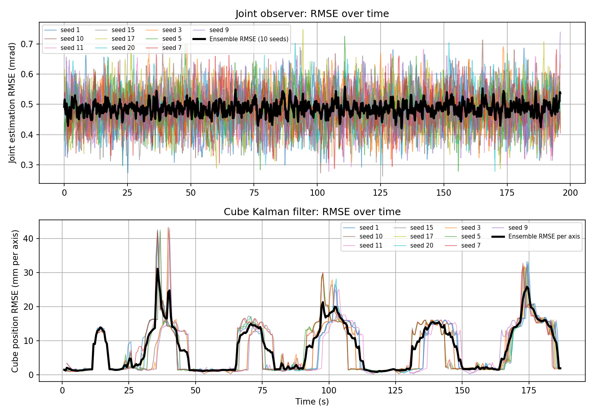
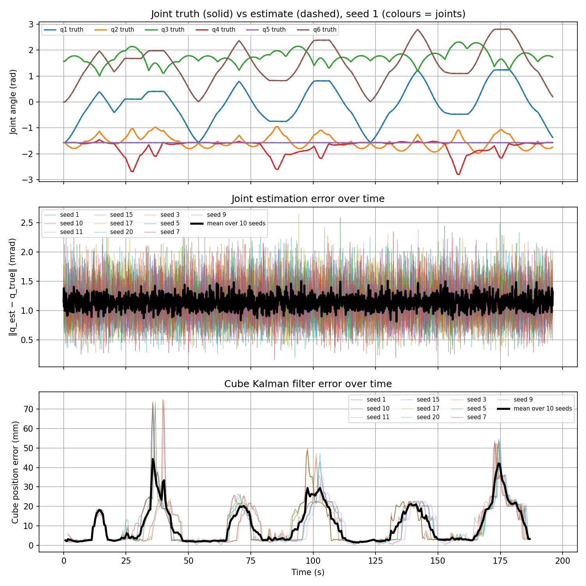
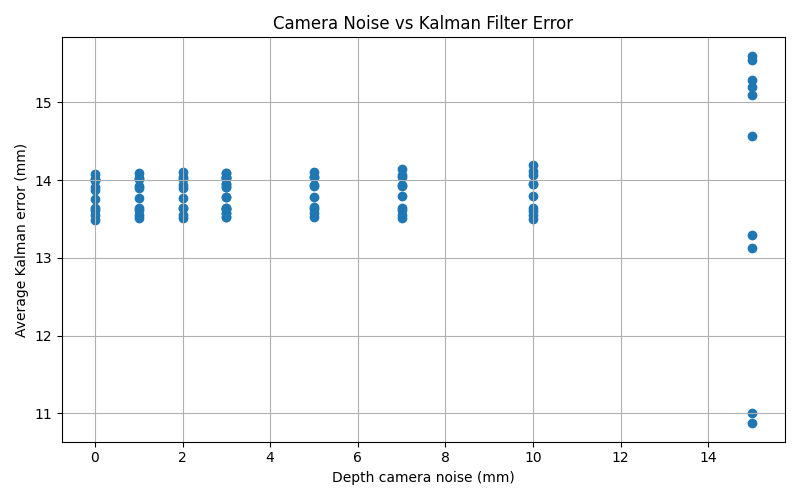

Demo video
UR3E performing tasks with disturbed trial
Overview
A simulated UR3e robot with a wrist-mounted RGB-D camera finds red, yellow and blue cubes on a table, picks each one up and drops it in the bin of the same colour. Cube positions are randomised every trial. The red cube moves back and forth, so the robot watches it, learns when it pauses, and grabs it during a pause.
System
Scene
The simulation takes place on a flat table with a UR3e six-joint robot arm (adapted from SouthColumn76/universal_robots_ur3e) mounted at the edge of the table.
Three cubes sit on the table, red, yellow and blue. Each cube has a free joint, which means it is a loose object that can be pushed, lifted and dropped like a real block. Their positions are randomised every trial, with each cube placed in its own strip of the table so they never overlap. The red cube also slides back and forth with short pauses, so it acts as a moving target.
Three open bins sit beside the robot, one for each cube colour. The robot has to pick up a cube, work out which bin matches its colour, and release the cube into that bin.
A two-finger gripper is attached to the end of the arm so it can grasp the cubes, and a wrist-mounted
RGB-D camera is attached next to it. Because the camera is fixed to wrist_3_link, it moves with the
gripper and always looks at the workspace from the robot's point of view. It provides a colour image to find the
cubes and a depth image to work out how far away they are.
Modelling
State-space model, controllability and observability
The UR3e robot has six joints, each with a joint position and velocity, giving the system 12 states in total. These states describe the robot's current joint configuration and movement. The system receives six joint-position actuator commands as inputs, measured in radians, which control the movement of the robot.
The robot's behaviour is represented using a linearised state-space model derived from the MuJoCo simulation:
Here, xk represents the current joint positions and velocities, while xk+1 represents the next state. Matrix A describes how the current state affects the next state, and matrix B describes how the actuator commands affect the robot's movement. The term c represents the model offset.
Matrix C describes how the states relate to the encoder measurements, while matrix D represents the direct effect of the inputs on the measured outputs, which is zero in our model. The encoders measure joint positions, while the Kalman observer estimates the joint velocities.
Controllability and observability
To evaluate the model, we tested its controllability and observability by calculating the ranks of their respective matrices. Since the system contains 12 states, a rank of 12 indicates full controllability or observability of the local linearised model.
The simulation produced the following results:
- State variables: six joint positions and six joint velocities (12 states).
- Control inputs: six joint-position actuator targets (rad).
- MuJoCo timestep: 0.002 s.
- Controllability rank: 12/12.
- Observability rank: 12/12.
- Maximum one-step model residual: 1.0 × 10⁻⁶.
- Closed-loop spectral radius: 0.9911.
The controllability rank of 12/12 indicates that the six actuator inputs can theoretically control all 12 states around the operating point. The observability rank of 12/12 indicates that all 12 states can be estimated from the available measurements over time, even though joint velocities are not directly measured.
The maximum one-step residual of 1.0 × 10⁻⁶ shows that the linearised model closely matches the MuJoCo simulation for the small changes tested. The closed-loop spectral radius of 0.9911, which is below one, also supports local stability when the LQR controller is applied.
Overall, these results show that the UR3e's linearised state-space model is suitable for joint-state estimation and LQR control around the tested operating point. However, these results do not guarantee the same performance under every robot configuration or operating condition.
Sensing
Calibration, noise handling and frame management
The UR3e uses a wrist-mounted RGB-D camera to detect coloured cubes and their matching trays. The camera captures 640 × 480 images with a vertical field of view of 51.28°. Using the pinhole camera model, the focal length is calculated as approximately 500 pixels, with the image centre at (319.5, 239.5) pixels. The camera is mounted on the wrist at an offset of (0.0325, 0.095, 0.05) m.
The camera converts RGB images into HSV colour space to identify objects by colour. Morphological opening and closing remove unwanted pixels, while contour detection finds the centre of each object in the image. Invalid depth readings are removed, and the median depth is used to reduce measurement errors. The pixel coordinates and depth are then converted into 3D positions. The camera's rotation and position are used to convert these measurements into world coordinates. Since the camera moves with the robot's wrist, this conversion is updated as the robot moves, allowing the robot to locate objects correctly from different positions.
Figure 1 shows how camera depth noise affects cube-position estimation across ten experimental seeds. Between 0 and 10 mm of added noise, the average Kalman-filtered position error stays between approximately 13.5 and 14.2 mm, showing that moderate noise has little effect on average accuracy. At 15 mm, errors vary more widely from 10.9 to 15.6 mm, showing less consistent performance. Figure 3 also shows temporary position errors exceeding 40 mm, which could contribute to unsuccessful grasps.
To deal with failed pickups, the robot returns to its home position, uses the camera to measure the cube's position again, and retries the pickup. This prevents the robot from continuing to rely on an outdated position estimate. In the reported simulation, this process allows all three cubes to be picked up and placed in their correct trays, showing how repeated camera measurements help the robot recover from errors.
Overall, the camera provides the position measurements needed for autonomous sorting, while noise reduction and repeated measurements improve reliability. However, the system could be improved by further camera calibration and adjusting the Kalman filter to better track moving objects. Additionally the results show significant position errors suggesting that more accurate tracking could reduce failed pickups. As well, taking another camera measurement immediately before grasping could also improve pickup accuracy. Although the current recovery system allows the robot to return home, locate the cube again and retry, reducing the need for these repeated attempts would improve efficiency and reliability.
Estimation
Observer / Kalman filter design, tuning and reported performance
The cube is modelled as moving at constant velocity, x₊ = Fx, with position measured directly, z = Hx + v. Both the model and the measurement are linear, so linearising would change nothing, and the standard KF is exact for this model. Its limit is the model itself, not the filter type (C.5).
The arm is nonlinear, but the observer uses a linear model x₊ = Ax + Bu + c, with A and B from finite differences of one MuJoCo step and c chosen so the model reproduces the nominal step exactly. The measurement is linear (y = q + v).
Real sensors do not measure the state exactly, because of sensor imperfections and environmental conditions. To test the estimator under realistic conditions, Gaussian noise with σ = 0.5 mrad is added to the simulated joint encoders. The filter’s covariances, Q and R, do not create this imperfection. They tell the filter how much noise to expect.
We set R = σ² = 2.5 × 10⁻⁷ rad² to match the injected encoder noise. The value is based on a 12-bit encoder, which the UR3e is taken to use. A 12-bit encoder has a step of 2π/4096 = 1.53 mrad (0.088°). Rounding to the nearest step gives a standard deviation of 1.53/√12 = 0.44 mrad, so 0.5 mrad is a rounded value of this. We set Q = 1 × 10⁻⁵ as an allowance for model error. The model is therefore allowed about 40 times the variance of the sensor, so the filter leans heavily on the encoders. This is only a rough ratio, because Q covers angles and velocities in different units.
In Figure 3, the joint observer uncertainty matches are consistent with its real error. But the per-joint error equals the injected noise (0.5 mrad), and the norm of six independent errors of that size is about 1.2 mrad. So the estimate is about as noisy as the raw reading, and the filter barely smooths. That follows from the tuning, since the filter trusts the encoders. Its value is a consistent covariance and a velocity estimate.
The band is the 95% χ² interval for the mean over N seeds, with n degrees of freedom per seed:
When static, NEES below 1 means the filter reports more uncertainty than it has, because R assumes 5 mm and the real error is 1 to 3 mm. While moving, NEES above 1 means it reports less uncertainty than its real error, because the constant-velocity model doesn’t fit a carried cube. The plateau of about 15 mm repeats across episodes and seeds, which looks more like a consistent offset than random error. We haven’t separated filter lag, camera latency and partial occlusion by the gripper. A direct test is to compare the stored raw measurement with the filtered one during the moving phases. If the raw error is also about 15 mm, the source is sensing. If it is small, it is filter lag.
This estimation process could be improved by having the cube Kalman filter assume constant speed, which reduces accuracy when cubes accelerate or change direction. Using a model that accounts for acceleration and adjusting Q and R during movement could improve tracking. Better filter tuning could also reduce joint sensor noise. Improving camera calibration and testing different noise levels, camera errors and blocked views would further improve the system’s accuracy and reliability.
Control
Controller design, tuning and tracking results
Controller design
The UR3e uses a Position-Based Visual Servoing (PBVS)-based approach with a Linear Quadratic Regulator (LQR) controller. The RGB-D camera and Kalman filter estimate the cube's 3D position, while Jacobian-based inverse kinematics calculates the joint angles needed to reach it. The LQR controller follows these angles using estimated joint positions and velocities rather than simulator ground truth. It uses the LQR control equation to calculate the difference between the estimated and desired joint states and correct the robot's movement.
Controller tuning
The LQR controller uses Q and R weighting matrices to balance accuracy and control effort. The position weight of 20 prioritises accurate joint positioning, while the velocity weight of 1 discourages unnecessary movement. The input weight of 0.1 penalises large actuator commands. These values help the robot follow its target without using excessive control effort.
Tracking results and evaluation
Figure 4 shows joint tracking errors of approximately 40 to 70 mrad, with occasional peaks near 85 mrad. The control-effort norm remained around 3.3–4.5, with no actuator saturation, showing that commands stayed within their limits. Figure 2 and 3 also show a joint-observer RMSE of approximately 0.5 mrad, supporting the accuracy of the estimated joint states.
The closed-loop stability equation gives a spectral radius of 0.9911, which is below 1 and indicates that the linearised control system is locally stable. However, the higher tracking errors suggest that smoother movements and further LQR tuning could improve accuracy.
Overall, the PBVS-based guidance and LQR controller allow the UR3e to reach camera-detected cubes using estimated states while keeping actuator commands within their limits. The system could thus be improved by further tuning for reliable cube picking which would limit the occasional tracking error peaks that occur throughout the data.
Integration and robustness
Performance under disturbance and noise
System integration
The UR3e integrates the RGB-D camera, Kalman filters, inverse kinematics, LQR controller and gripper to detect, pick and sort coloured cubes. The camera measures each cube's position, the Kalman filters estimate the cube and joint states, and inverse kinematics calculates the required joint angles. The LQR controller then guides the robot using these estimates. The moving red cube tests this integration because the robot must continuously update its target as the cube changes position. Camera measurements and gripper feedback are also used to verify successful pickup.
Robustness and results
Robustness was evaluated across 10 experimental seeds, using different sensor-noise conditions and a moving cube. Figure 1 shows that average cube position error remained between 13.5 and 14.2 mm under 0–10 mm of added depth noise. At 15 mm noise, errors varied between 10.9 and 15.6 mm, showing reduced consistency. Figure 5 shows temporary cube estimation errors exceeding 40 mm, while joint estimation remained more accurate at approximately 0.5 mrad RMSE. Figure 4 shows joint tracking errors generally around 40–70 mrad, with no actuator saturation. These results demonstrate that joint control remains consistent, but cube localisation is less reliable during certain movements, potentially affecting grasp accuracy.
Limitations and improvements
The cube Kalman filter assumes constant velocity, which may explain some tracking errors when the red cube changes direction. The camera also relies on fixed colour thresholds and known cube dimensions, limiting its ability to detect different objects or operate under changing lighting. Furthermore, the simulation does not fully represent real-world camera errors, object slipping or unexpected obstacles. Improvements could include a better motion model, more reliable object detection and tactile sensors to confirm successful grasps.
Overall, the results demonstrate successful integration of sensing, estimation and control under the tested conditions. However, reducing cube-position estimation errors and testing more unpredictable object movements would improve the system's reliability.
Discussion and Results
Results and discussion
Estimation accuracy, controller performance and robustness across ten seeds
Figure 2

The graph evaluates how increasing depth-camera noise affects the cube Kalman filter's position accuracy across ten experimental seeds. This supports the project's aim of developing a vision-guided UR3e robot that can reliably locate and grasp cubes despite measurement uncertainty.
Between 0 and 10 mm of added depth noise, the average Kalman position error remains relatively stable at approximately 13.5–14.2 mm, showing limited sensitivity to increasing noise within this range. However, at 15 mm, the results become more scattered, ranging from approximately 10.9 to 15.6 mm. This indicates that the filter's performance becomes less consistent at the highest tested noise level.
Importantly, the error remains around 14 mm even with zero added depth noise, suggesting that other factors contribute to the estimation error. Possible causes include camera localisation errors, filtering delays and limitations of the constant-velocity model used to track the moving red cube. However, the graph alone cannot identify their individual effects.
Overall, the results suggest that the Kalman filter maintains relatively stable average position accuracy under moderate depth noise, demonstrating some tolerance to measurement uncertainty. However, the greater variation at 15 mm highlights a limitation in robustness. Further testing is needed to determine how these estimation errors affect actual grasping and sorting success.
Figure 4

The graphs evaluate the reliability of the joint and cube Kalman filters across ten experimental seeds over approximately 200 seconds. The joint observer performs consistently, with its average normalised NEES remaining close to the ideal value of 1 and generally within the 95% confidence bounds. Combined with a joint estimation RMSE of approximately 0.5 mrad, this demonstrates that the observer provides accurate joint-position estimates with reasonably reliable uncertainty predictions. This is important because the UR3e's LQR controller relies on estimated joint states to calculate its control commands.
In contrast, the cube Kalman filter shows significantly greater inconsistency. Its normalised NEES frequently rises to approximately 10 to 100, with extreme spikes approaching 10¹³ around 100, 135 to 145 and 170 to 180 seconds. These results indicate that the filter sometimes greatly underestimates its position uncertainty, consistent with the cube RMSE peaks exceeding 40 mm. A possible contributing factor is the constant-velocity model, which cannot fully represent the moving red cube's acceleration and changes in direction. However, the extreme spikes also warrant investigation of the covariance calculations. Overall, the results show that joint estimation is accurate and reasonably consistent, while cube tracking requires further improvement to strengthen the reliability of the complete pick-and-place system.
Figure 3

The graphs evaluate the accuracy of the UR3e's joint observer and cube Kalman filter across ten experimental seeds, supporting the project's aim of using estimated states for reliable vision-guided pick-and-place operations.
The joint observer graph shows a consistently low estimation RMSE, with the average remaining around 0.5 mrad (0.0005 rad) throughout the 195-second simulation. Individual trials generally fluctuate between 0.3 and 0.7 mrad, without a sustained increase in error. This demonstrates that the observer can accurately estimate joint positions during robot movement, providing reliable state information for forward kinematics and LQR feedback control.
In contrast, the cube Kalman filter graph shows greater variation in position accuracy. Errors remain around 1 to 2 mm per axis during quieter periods but increase to approximately 15 mm around 65–75 and 135–145 seconds. Larger peaks occur around 35 to 40 seconds, exceeding 40 mm in individual trials, and around 175 seconds, reaching approximately 33 mm. These fluctuations indicate that cube-position estimation becomes less accurate during certain stages of the sorting process.
One possible contributing factor is the constant-velocity Kalman model, which cannot fully represent the moving red cube's acceleration and direction changes. However, the graph alone cannot identify the cause of each peak.
Overall, the results show that joint-state estimation is accurate and consistent, while cube position estimation experiences significant temporary errors. This highlights the importance of improving dynamic object tracking to strengthen grasping accuracy and the robustness of the complete robotic system.
Figure 5

The four graphs evaluate the UR3e's LQR controller across ten experimental seeds over approximately 195 seconds. The controller uses Qpos = 20 to prioritise accurate joint positioning when approaching cubes and trays, Qvel = 1 to reduce joint-velocity errors, and R = 0.1 to penalise excessive corrective actuator commands. These weights prioritise positioning accuracy while balancing movement and control effort.
The tracking error graph shows average errors generally between 40–70 mrad, with peaks of approximately 80–85 mrad around 165–175 seconds. This indicates that the robot follows its joint references with varying accuracy throughout the sorting process, with larger errors during certain movements.
The control effort graph shows command norms ranging from approximately 3.3 to 4.5, with higher values during some periods of increased tracking error. This suggests that the controller applies greater corrective input during more demanding movements. Similarly, the LQR stage cost graph increases from approximately 1.2 to 1.4 to peaks of 2.2 to 2.4, reflecting the combined penalties on joint-position error, velocity error and control input. Finally, the actuator saturation graph remains at 0 across all ten seeds, showing that no recorded commands reached the implemented actuator limits.
Overall, the results demonstrate that the LQR controller tracks joint references without actuator saturation, although temporary increases in tracking error highlight opportunities to improve controller tuning and trajectory tracking.
Figure 1

The three graphs evaluate how accurately the Kalman filters estimate the UR3e's joint positions and cube positions, supporting the project's aim of using sensor-based estimates for autonomous pick-and-place operations.
The first graph compares actual joint positions (solid lines) with Kalman estimates (dashed lines) for seed 1. The six joints move through different ranges, with joint 1 reaching approximately 1.2 rad, joint 4 dropping to −2.8 rad, and joint 6 reaching 2.8 rad. Despite these movements, the estimated and actual trajectories almost completely overlap, showing that the observer accurately follows changes in joint positions.
The second graph measures joint estimation error across ten seeds. The average error remains around 1.1 to 1.3 mrad, with individual values occasionally reaching approximately 2.5 to 2.6 mrad. This demonstrates relatively stable joint estimation throughout the simulation, providing accurate state information for forward kinematics and LQR feedback control.
In contrast, the third graph shows greater variation in cube-position estimation. Errors remain around 2–3 mm during quieter periods but increase significantly, exceeding 70 mm around 35–40 seconds and reaching approximately 50–55 mm around 100 and 175 seconds. These peaks indicate periods when the estimated cube position differs substantially from its actual position.
The constant-velocity Kalman model may contribute to these errors when the moving red cube accelerates or changes direction, although the graph alone cannot confirm their exact cause.
Overall, the results demonstrate accurate and consistent joint estimation but less reliable cube tracking, highlighting the need to improve dynamic position estimation to strengthen grasping accuracy and system robustness.
Run it
Python 3.12. From a fresh environment:
git clone https://github.com/USERNAME/Group16_Sensors_and_Control_AT4.git cd Group16_Sensors_and_Control_AT4 python -m venv .venv .venv\Scripts\activate pip install -r requirements.txt python pick_place_estimated.py r b y
r b y is the pick order. A camera-detection window appears first (press any key), then the MuJoCo viewer and a live wrist-camera window. Each cube is placed in its bin and a summary is printed. Full instructions are in the repository README.
Contributions
| Member | Contribution |
|---|---|
| Tasnim Sarah | Tasnim created the repository and contributed to ensuring proper communication and organisation. Tasnim assisted in implementing different parts of the simulation together as well as creating the contents of the project page, such as the theoretical explanations and the graphs. |
| Maryam Qutub | Maryam contributed to the controllability section of the simulation, which communicated sensor information regarding the pose of the cubes to the joint velocities of the UR3e. She also implemented the LQR and contributed to the observability of the system. She helped with debugging and making the simulation more robust. |
| Princess Kisakye | Princess worked on developing the codespace to achieve the specified criteria. She managed each of our roles and responsibilities. She developed the camera and kalman filter for the simulation, and helped with further integration. Princess was key to ensuring the simulation operated realistically and successfully, and allowed the team to understand what was occurring in the simulation. e |
| Vanessa Kurniawidi | Vanessa created the environment where the simulation runs in, and also created the project page and its contents; she created the system logic flowchart and the theoretical analysis. Vanessa also helped contribute to making the simulation more robust and allow for better runs, through debugging. |
Generative AI declaration
ChatGPT and Claude were used to assist with technical explanations, code development, debugging and documentation. Team members are responsible for reviewing AI-assisted material, checking it against the implementation and results, and understanding the submitted system.